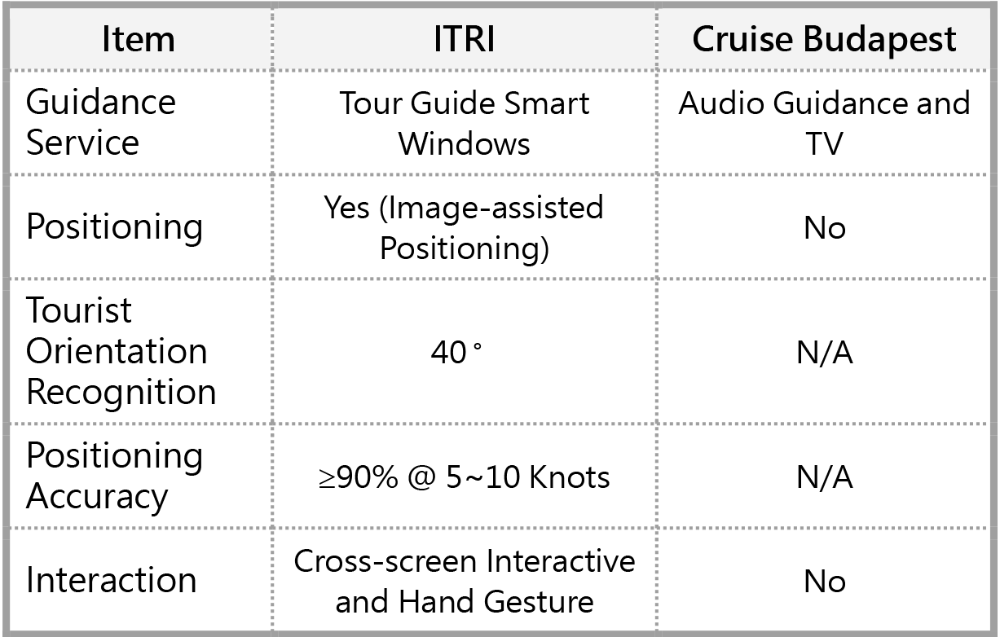

| 觀光遊船智慧窗屏導覽系統 Smart Window Tour Guide for Cruises |
| 因應智慧船艙發展趨勢，工研院以透明顯示技術為基礎，開發 觀光遊船智慧窗屏導覽系統，實現乘客觀光賞景時，直覺顯示 景點資訊於船艙智慧窗屏之視線落點處，視線辨識方向角度達 40 度，於 5 至 10 節船速下辨識正確率≥90%，未來可應用在 船舶、智慧移動及其他觀光場域。 To meet the trend of smart cabins, ITRI has developed a smart window tour guide for cruises based on transparent display technology. The smart window can intuitively display the scenic spot information at the point of sight of passengers while sightseeing. The angle of sight recognition direction reaches 40 degrees, and the recognition accuracy rate is over 90% at ship speed of 5 to 10 knots. It can be applied to tour cruise, smart mobility and other tourism fields.  |
| 技術洽詢聯絡人：柯瑩 聯絡電話：03-5914765 E-mail：claireko@itri.org.tw |